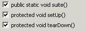
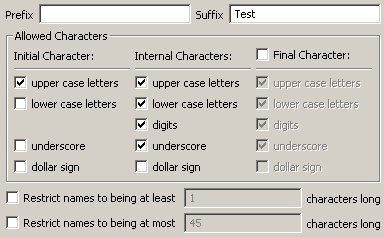

Audit - Rules - JUnit UsageDescriptionThis group contains audit rules that check for correct usage of the JUnit unit testing framework. |
Rules:
|
Summary
The @Test annotation should not be used.
Description
This audit rule finds uses of the @Test annotation.
Example
The following annotation would be flagged as a violation:
@Test
public void testIt()
Summary
Test suites should be dynamically composed.
Description
This audit rule checks for test cases that implement the static method suite(). Implementing this method makes it harder to extend your test suite because you have to remember to manually add any newly added test methods to the suite manually. You should take advantage of JUnit's ability to dynamically compute the test suite based on test method names.
Example
The following method would be flagged if it appeared within a test case:
public static Test suite()
{
...
}
Summary
Exceptions representing failure should not be caught.
Description
This audit rule checks for test methods that catch exceptions in order to cause the test to fail by invoking one of the fail() methods. It is not necessary to catch the exception because uncaught exceptions will automatically cause the test to fail.
Example
The following invocation of the fail() method would be flagged as a violation because it occurs within a catch block:
try {
...
} catch (Exception exception) {
fail("exception thrown");
}
Summary
Every implementation of setUp() should invoke super.setUp().
Description
This audit rule looks for implementations of the method setUp() that do not invoke the inherited setUp() method.
Example
The following definition of the method setUp() would be flagged because it does not invoke the inherited implementation of setUp():
public void setUp()
{
employee = new Employee("Jane Doe");
}
Summary
Every implementation of tearDown() should invoke super.tearDown().
Description
This audit rule looks for implementations of the method tearDown() that do not invoke the inherited tearDown() method.
Example
The following definition of the method tearDown() would be flagged because it does not invoke the inherited implementation of tearDown():
public void tearDown()
{
employee = null;
}
Summary
Check JUnit framework method declarations.
Description
JUnit testing framework methods are checked for proper declarations, including spelling. The following checks are performed:
- Check that "suite", "setUp" and "tearDown" are spelled correctly
- Check that "suite", "setUp" and "tearDown" have no parameters
- Check that "suite", "setUp" and "tearDown" are void
- Check that "suite", "setUp" and "tearDown" have the proper visibility
- Check that "setUp" and "tearDown" are not static
- Check that "suite" is static

Summary
JUnit tests should include at least one assertion.
Description
This audit rule flags any JUnit test method that does not contain any assertions. Missing Assertions usually indicate weak or incomplete test cases. Using assert with messages provide a clear idea of what the test does.
Example
The following test case would be flagged as a violation because it does not contain any assertions:
public class MissingAssert extends TestCase{
public void testSomething(){
Foo f = findFoo();
f.doWork();}}
Summary
Assertions should have messages.
Description
This audit rule looks for invocations of the assert and fail methods defined in junit.framework.Assert which do not have a message. A message should be added so that the framework can provide better information about why the test failed.
Example
The following invocation would be flagged as a violation:
assertEquals(expectedCount, actualCount);
Summary
TestCase constructors should not include any set-up code.
Description
This audit rule checks for constructors defined in test cases that do more than invoke the superclass' constructor. Set-up should be performed in either the setUp() method or the accessor method for one of the test fixtures.
Example
The following constructor would be flagged as a violation if it occurred within a test case class:
public MyTestCase(String testName)
{
super(testName);
employee = new Employee("Jane Doe");
}
Summary
Test case names should conform to the defined standard.
Description
This audit rule checks the names of all test cases to ensure that they conform to the standard.
Example
If the rule were configured to require that the word "Test" be appended to every test case's name, the following class declaration would be flagged as a violation:
public class MyTestClass extends TestCase
{
...
}

Summary
Use the @After annotation rather than tearDown() to clean up all the data entities required in running tests.
Description
In JUnit 3, the tearDown method was used to clean up all data entities required in running tests. JUnit 4 skips the tearDown method and executes all methods annotated with @After after running each test.
Example
The following test case would be flagged as a violation because it uses tearDown() rather than @After for clean up activities:
public class MyTest extends TestCase {
public void tearDown(){
doReleaseConnection();
}
}
Summary
Use the @Before annotation rather than setUp() to initialize the data entities required in running tests.
Description
In JUnit 3, the setUp method was used to set up all data entities required in running tests. JUnit 4 skips the setUp method and executes all methods annotated with @Before before all tests.
Example
The following test case would be flagged as a violation because it uses setUp() rather than @Before for setting up the Junit test:
public class MyTest extends TestCase {
public void setUp(){
doEstablishConnection();
}
}
Summary
Use the @RunWith and @SuiteClasses annotations rather than suite() method to build test suite for JUnit
Description
In JUnit 3, test suites are indicated by the suite() method. In JUnit 4, suites are indicated through the @RunWith and @SuiteClasses annotations.
Example
The following test class would be flagged as a violation because it uses suite() rather than @RunWith and @SuiteClasses annotations to construct test suite:
public class BadExample extends TestCase{
public static Test suite(){
return new Suite();
}
}
Summary
JUnit 4 tests should use the @Test annotation.
Description
In JUnit 3, the framework executed all methods which started with the word test as a unit test. In JUnit 4, only methods annotated with the @Test annotation are identified as tests.
Example
The following test case would be flagged as a violation because the test method does not contain any @Test annotation:
public class MyTest extends TestCase {
public void testFoo(){
doSomething();
}
}